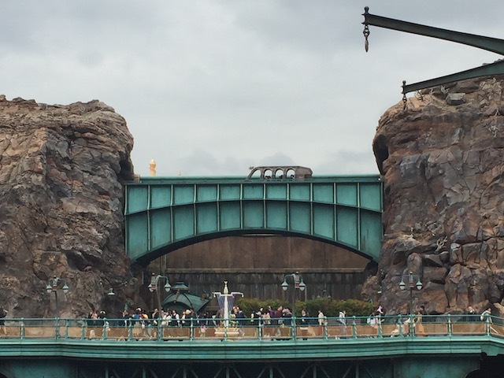
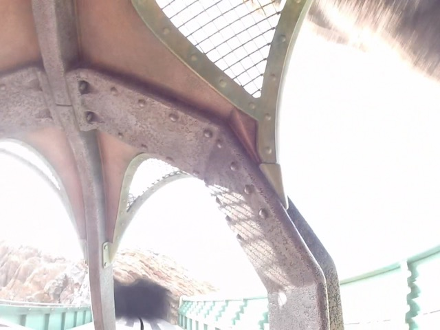
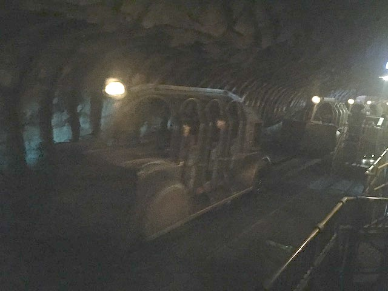
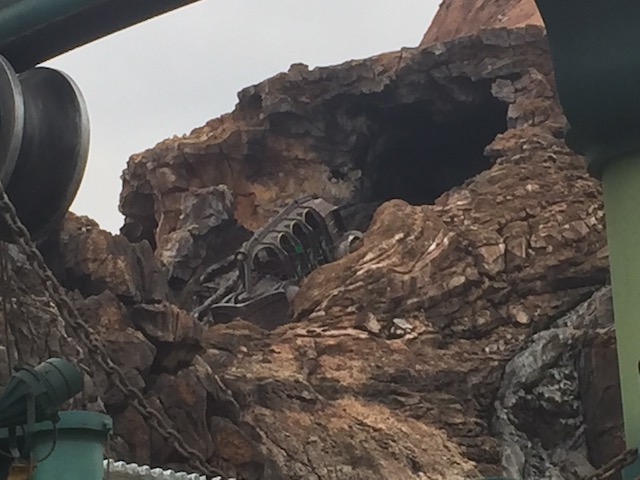
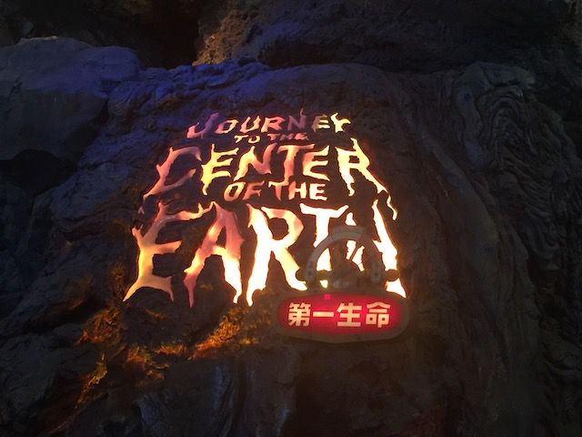

| |
Journey to the Center of the Earth Review

Today at the Tokyo Disney Resort, we're here to review Journey to the Center of the Earth. Currently my favorite Disney Dark Ride and possibly my favorite dark ride of all time. Yes, this is another one of those dark rides like Test Track and Radiator Springs Racers (the only dark rides that I'll review). And yeah. Test Track may be faster, so one might think that it's the best of them all. *laugh* Oh hell no! Test Track is great and all, but this EASILY beats it. To see why, hop in the cars, and let's go for a ride. We go around a turn, stop, and take a look at all the shiny crystal shards in front of us. Ooh! Pretty. But sure enough, we must venture on. We journey our way down into the center of the Earth, getting a great view of all those crystal shards along the way. There also seems to be some sort of green stuff. Not that there's much life in the center of the Earth, but still. Pretty cool. We dig deeper and....what the hell!? An ecosystem full of mushrooms and....GOD DAMN!!! I WISH the center of the Earth was this cool. We dig deeper (much further than we've ever reached in real life), and.....we start to see lightning flashes. OK. I'm no geologist. But there is no weather in the middle of the Earth, aside from MOLTEN LIQUID ROCK!!! AND GAH!!! I'M BURNING AND CRUSHED BY TREMENDOUS PRESSURE!!! WHY DID MY STUPID ASS DECIDE TO COME DOWN HERE!!? We dig deeper. Going down, some sort of incline. There's green smoke, and it looks like something is watching us. View more lightning strikes as we go through a cave. Climb up a hill, through more rocks, see some fire, and....we see it. The Lava Monster. This has to be the coolest anamatronic that Disney has ever done! This thing is just so damn impressive! It growls and threatens us, and....BAM!!! The ride actually takes off now as we launch into a banked turn through some fog. Though some more turns, and....we see a light! Go up towards the light! Go through a cloud of mist, so that obscures our vision as we briefly peek out of the volcano before dipping back down. We go through a turn in the dark, before going out to a bridge that essentially acts as the brake run. And GOD DAMN!!! BEST DARK RIDE EVER!!! The theming is so good! And it's at Tokyo DisneySea! What are you waiting for!!? Get on this thing now!!!
10/10
Location: Tokyo DisneySea
Opened: 2001
Built by: Disney
Last Ridden: November 13, 2018
Journey to the Center of the Earth Photos






Home
|